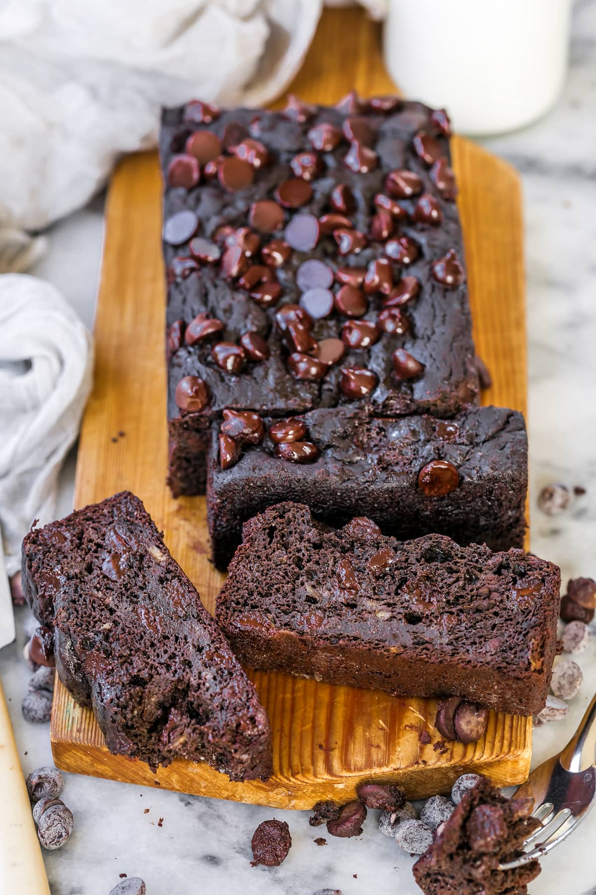
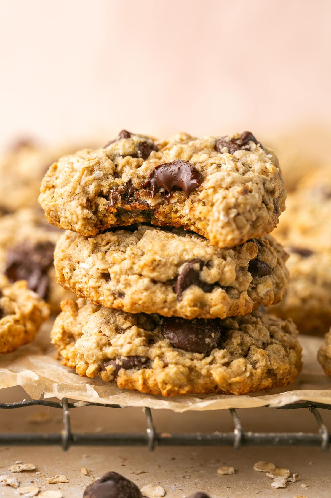
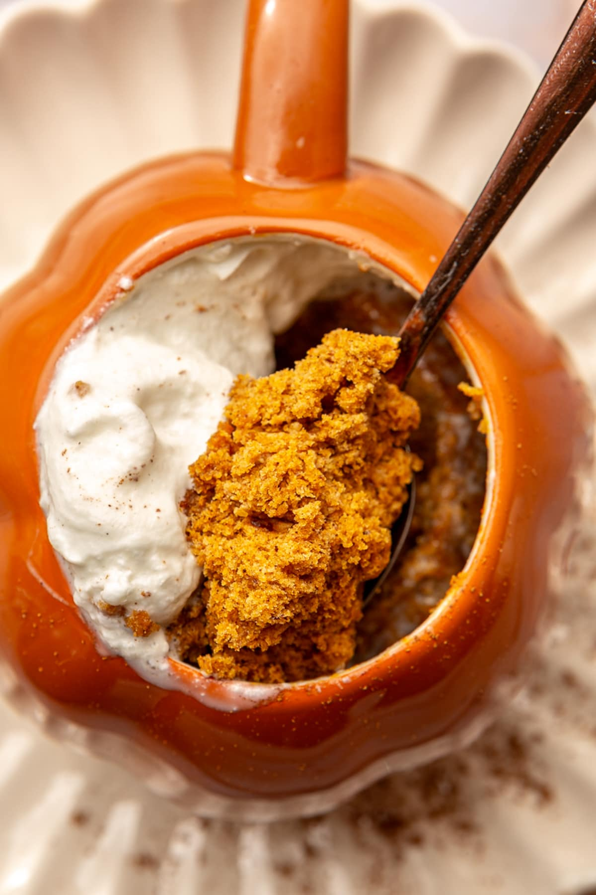

Banana bread
Ingredients
- oat Flour
- coco powder- half cup
- Baking powder
- Salt
- banans
- Eggs
- maple syrup / honey
- vanilla extract
- chocolate chips
Recipe
- STEP 1
Whisk all five dry ingredients in a medium bowl.
Mash the bananas and then add the eggs,
maple syrup, and vanilla. - STEP 2
stir the dry ingredients into the banana mixture
until combined, careful not to overmix.
Then stir in a half cup of chocolate chips. - STEP 3
Pour the batter into a loaf pan lined with parchment paper,
and top with the remaining chocolate chips.
Bake at 350°F for 45 to 55 minutes until
a toothpick inserted comes out clean,
and let the pan cool for 15 minutes before slicing.

Oatmeal cocochip cookies
Ingredients
- All-purpose flour
- Baking powder
- Baking soda
- Salt
- Ground cinnamon
- Quick oats
- Dark chocolate chips
- Unsalted butter
- Sugar
- Unpacked brown sugar
- Large egg
- Unsweetened apple sauce
- Vanilla extract
Recipe
- Preheat oven to 350°F, line two baking sheets
with parchment paper.whisk together flour,
baking powder, baking soda, salt and cinnamon. - In a large bowl, with a hand mixer or stand mixer,
cream together the butter and the sugars
on medium speed. Add the egg, followed by the
applesauce and vanilla extract. - Working by hand, stir in the flour mixture and the oats
until just combined and no streaks of flour remain,
stir in the chocolate chips.
Drop heaping tablespoonfuls (approx 1 tbsp each) of the dough
onto prepared baking sheets, flattening
each cookie slightly - Bake for about 10-12 minutes, or until cookies
become light brown at the edges. Let cool
on baking sheet for 3 or 4 minutes, then
transfer to a wire rack to cool completely.

Pumkin mug cake
Ingredients
- flax seed
- milk
- all-purpose-flour
- baking powder
- salt
- cinnamon, pumkin pie spice
- pumkin
- vanilla extract
- sweetener
- Wipped cream
Recipe
- Combine the flax seed and milk in a small bowl
and let it sit for five minutes.Whisk the flour,
pumpkin spice, cinnamon, baking powder, and salt
in a large microwavable mug. - Mix in the pumpkin puree, vanilla, flax seed,
and sweetener. Microwave the mug for approximately 90 seconds.
You may want to cook it for 70 seconds first
and then check it before microwaving it any longer.
Once the cake is firm to the touch,
it’s ready. - Let the pumpkin mug cake cool for a minute or two.
Serve it warm with whipped cream, pumpkin spice,
and cinnamon if desired.
